")
Chaos Tunnels (Members)
Warning | Introduction | Location | Points of Interest
Personalities | Quests | The Creatures brought by Chaos | Miscellaneous
Personalities | Quests | The Creatures brought by Chaos | Miscellaneous
Warning
The Chaos Tunnels are a dangerous place, filled with aggressive and powerful creatures with a taste for the flesh of adventurers. Please only take items with you that you are willing to lose. This is especially true because the Tunnels are a multicombat area, so you can be attacked by many foes at once.
Be aware that it is easy to get lost among the caves and portals, so you should remember to bring an item or runes to teleport out with.
Introduction
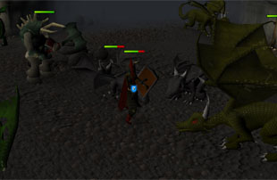
Whatever its origin, it is certain that the caves are tainted by the dark hands of Zamorakian magic...
Location
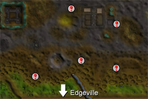
If you have reached a certain stage in What Lies Below, the chances are that you have discovered the entrance to a Chaos Tunnel near Varrock. Those especially inquisitive adventurers may even be shocked to glimpse a familiar rogue - follow him at your peril, though: he is old, evil and sure to have a few vicious tricks up his voluminous sleeves.
Points of Interest
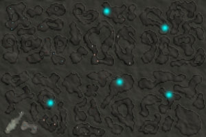
The Chaos Tunnels are multicombat areas filled with aggressive monsters, so you will find that it is an excellent location for training your Summoning skill alongside your combat skills. In addition, there is large population of Slayer monsters, so make sure you bring the appropriate supplies!
Personalities
There are no personalities of note within the Chaos Tunnels.
Quests
There are no quests to start in the Chaos Tunnels.
The Creatures brought by Chaos
 Cave bugs are strange creatures confined to the darkness of the caves. They are very simple opponents, and anyone bold enough to enter the dungeon should have little difficulty killing them. You must have a Slayer level of 7 to kill cave bugs.
|
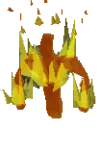
With bodies made solely of flame, the fire elemental makes a terrifying prospect for inexperienced explorers. Mercifully for their enemies, fire elementals look far more dangerous than their actual abilities can manage.
|
|
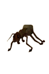
Traditionally living among the tendrils of the massive Jade Vine in Karamja, giant ants are lost in the Chaos Tunnels. The workers are generally quite passive, though, relying upon the strength of the giant ant soldiers to keep them safe in this strange place.
|
 The zombies of the Chaos Tunnels are drawn from the hordes of reanimated corpses that can be found in the tragic places of RuneScape. Unsurprisingly, they are hideous and malformed creatures that all sane people try to avoid.
|
 Moss giants are more commonly seen on the surface of RuneScape, but a fair amount have found their way into the Chaos Tunnels, where they and their beards wait for adventurers to disturb them. They are quite strong, and will put up a good fight against unprepared warriors.
|
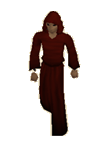
Monks that follow Zamorak must always be considered dangerous, which probably comes from following the nefarious god of evil. They will use melee attacks against you if you wander into their area of worship.
|
 Quite mysteriously, the chaotic powers of particularly evil magic are able to penetrate even the most mundane of tools, like the humble spade. As you might expect, the spade can make a formidable weapon when enchanted in this way, but luckily it is also quite passive.
|
 Like animated spades, possessed pickaxes are the result of strange enchantments and curses, all of which bring the humble pickaxe to life. Unlike the spade, however, the pickaxe's personality is temperamental, making it a much more aggressive foe.
|
 Made from the hardest clay to be found in RuneScape, earth warriors are like golems that require no instructions: their dastardly minds drive them to attack their enemies with weapons made from the same material as their bodies.
|
 Originating in the Barrows deep within Morytania, bloodworms live in the darkness, feeding on treasure hunters' blood. Moving to the Chaos Tunnels has meant little to them, for there is still a constant flow of explorers and their feeble eyesight is incapable of telling the difference between their native Barrows and the convolutions of the Chaos Tunnels.
|
 Ordinary leeches are a minor irritation to jungle explorers and adventurers wandering through swamps. The leeches of the Chaos Tunnels, however, are bloated blood-hungry creatures more than capable of shrugging off the salt you might use on their lesser cousins. Beware also that leeches will drain your skill levels temporarily.
|
 These spiders can be troublesome for people looking to train. The power of the shadow spider is that they are extremely good at draining Prayer. If you are venturing down here, it may be wise to bring a Prayer restore potion.
|
|
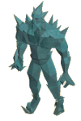
Though his blades may be sharp, his mind certainly is not. Once confronted, however, this surly and none-too-clever oaf will make short work of you with his sword, slashing and blindly pummeling. This lofty foe is prone to fire, Ranged and Magic attacks.
|
 Tiny though the crypt spider is, its life has been spent among the horrors of the Barrows, where it must be strong to survive. For such a tiny creature, it can take a large amount of damage, but, like most spiders, a good crushing weapon (perhaps something heftier than your shoe, though) should see it off.
|
 A spirit of elemental magic, the ice warrior feels compelled to patrol its territory and slay intruders. This melee fighter is composed of ice and as such is vulnerable to fire and shattering crush attacks. Also weak to Magic attacks, the warrior will often leave runestone drops as his elemental spirit evaporates.
|
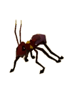
Devoted to defending the giant ant workers it shares its home with, being in a new environment away from the Jade Vine has done nothing to diminish its spirit. They are fierce fighters and will do everything in their power to bite you to death using its vicious mandibles.
|
 Shadow hounds are predators from the darkest regions of RuneScape, where their smokey colouring, excellent eyesight and silent footstep can be best put to use. They are opportunistic and have more in common with jackals than other varieties of dog or wolf.
|
 These spiders are appropriately coloured to warn you off, and can cause concern regardless of how strong you are. It is lucky if you escape them and are not poisoned, as they are very good at hunting and damaging their prey.
|
 As you might expect, an infernal mage uses his powerful spells to eliminate his enemies. By themselves they aren't too much of a concern, but should you be attacked by a number of them when your Prayer is running low...
|
 Big wolves, much as their name suggest, are quite large specimens of the canine species. They are pack leaders or solitary hunters, and much more dangerous than most wolves you will find above ground. When met in groups, adventurers should beware of their sharp teeth and brutish, talon-tipped paws.
|
 With massive fangs and claws, a nasty attitude and probably more than a few diseases, giant crypt rats are a bit of a surprise to most adventurers. Unlike the sort of giant rats you might expect to see around Lumbridge, giant crypt rats know how to handle themselves in combat. They're also excellent at scurrying about in a sinister manner.
|
 Skeletons may look harmless and weak, but their lack of muscles is more than made up for by the potent magic that holds them together. If you choose to fight skeletons, you may notice the skeleton's bones will give way when crushing attacks are used.
|
|
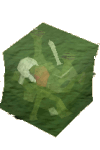
Gelatinous creatures of pure wickedness, the jelly is little more than a stomach that enjoys the taste of almost everything. Though they look harmless - even a little comical - jellies are dangerous foes.
|
 The most dangerous of all the spiders you could run into in the Chaos Tunnels, giant crypt spiders get their strange colouring from their usual diet of adventurers and other, smaller giant crypt spiders. As for killing them, bring a nice big mace, or other crushing weapon, and watch their bodies squish (hopefully quickly).
|
 These mighty lizards are a distant relative of the mighty Elvarg of Crandor, although far more agreeable. Less well defended against stab and Ranged attacks, the green dragon is a pale green shadow of Elvarg's might. Luckily.
|
 Armed with evil bows and wicked arrows, Zamorak's rangers enjoy skewering things from a distance and can often be found picking on anything smaller than themselves - and if there are a few Zamorak rangers, they'll happily go after larger targets.
|
|
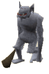
Ice trolls are, like all other trolls, remarkably aggressive and quite strong. In the far north of RuneScape, where the trolls cluster in greater numbers, the ice trolls are in such numbers that only the very bold and the very stupid will dare trespass.
|
 Evil to the core from years of bullying at school, Zamorak mages now wield potent magic with which to smite the smug sporting types that made their younger days difficult. Having said that, they're unlikely to run into them in the Chaos Tunnels - but just give them the opportunity...
|
 Though they may be cute, and not appear much of a threat, even the smallest of dragons is a dangerous opponent. Baby dragons are best attacked with stabbing or Ranged weapons, as these are capable of punching through their tough scales.
|
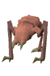
Turoth are strange, three-legged creatures that defy logic. It is rare to see them outside of the Slayer Dungeon in the Fremennik Province, and the turoth in the Chaos Tunnels have been driven mad (well, madder) by their movement to this strange new area. They are tough beasts that only those with the correct equipment can defeat. You need a Slayer level of 55 to kill turoth.
|
 The followers of Zamorak that prefer the intimacy of close combat are armed with nasty blades and imposing armour. They gladly attack adventurers that cross their path, but that's more from a love of combat than any sense of rage.
|
 Fire giants are powerful creatures, but wear little armour. What natural toughness they have is a defence against slashing weapons, so those adventurers uncertain of their abilities should try something else.
|
 No one can get through Waterbirth Island Dungeon without seeing a dagannoth, but you might be lucky enough to get through the Chaos Tunnels without seeing one. Their talons are long and their teeth are sharp, honed over decades of chewing on the rocks of their caves - and sometimes on the bones and armour of misguided adventurers.
|
 Few citizens of RuneScape ever wish to deal with this kind of wolf: dire wolves are massive, violent beasts well suited to their name. They merrily tear chunks of meat from foolish adventurers, then sit back and wait for more to come along.
|
|
Dust devils are odd, bouncing creatures unused to living outside of the smoke well in the Kharidian Desert, but apparently they are more than capable of surviving in the Chaos Tunnels. They can be dangerous creatures to face if you are inexperienced or lack the correct equipment. You need a Slayer level of 65 to kill dust devils.
|
 Grown to monstrous proportions, these beasts are near unrecognisable from their smaller brethren, the lesser cave bugs. It almost seems as if the kalphites have had an influence on these enlarged creatures...
|
 Mummies are the embalmed bodies of long-dead nobles. Of course, in RuneScape the dead do not rest easy, and now they are cursed to wander aimlessly. They have been driven mad by their long and joyless undeath. They are extremely strong and should be avoided by all but the strongest adventurers.
|
 Gargoyles are flying creatures made of solid rock. Quite how they keep themselves in the air is a mystery, but their resilience is not. If you expect to fight gargoyles, you should bring the correct equipment. You need a Slayer level of 75 to kill gargoyles.
|
 Nechryael are tall and powerful, and quite inclined to kill you. They are as evil as anything you are likely to encounter in all your travels across RuneScape, and should never be underestimated. You must have a Slayer level of 80 to kill nechryael.
|
 Waterfiends are the physical manifestation of the essence of water. Oh yes, and they're terribly evil. They will eagerly hurl arrows made of water at anyone within range, making them quite an irritation.
|
 Like other metal dragons, bronze dragons are covered in hard scales that make them particularly difficult to harm. They are a strange sight in the dungeon, glittering reflections of whatever light source is around them. Because they are covered in these scales, though, they are quite vulnerable to Magic.
|
 A few beasts around RuneScape take advantage of the good reputation of the pet rock to deceive their prey. The rock crab is possibly the best known of these, and any good rock aficionado should be able to tell the difference between the humble and generous pet rock and the vicious and deceitful rock crab.
|
 Black demons are vast and powerful demons. Towering over adventurers and most other monsters, they stalk the lower reaches of RuneScape, hoping for a tasty meal.
|
Miscellaneous
- Because the Chaos Tunnels are a multicombat area filled with monsters, it is a great place to bring your Summoning familiars to train.
- Most of the time, a portal will take you to the nearest chamber, so it is possible to navigate around much of the dungeon fairly quickly and simply.

More articles in
Dungeons
|
|